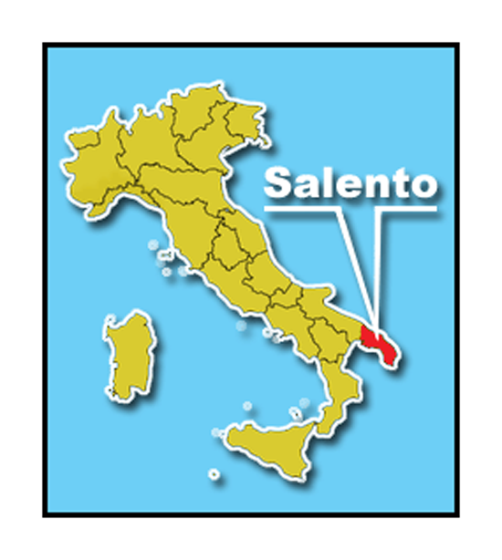
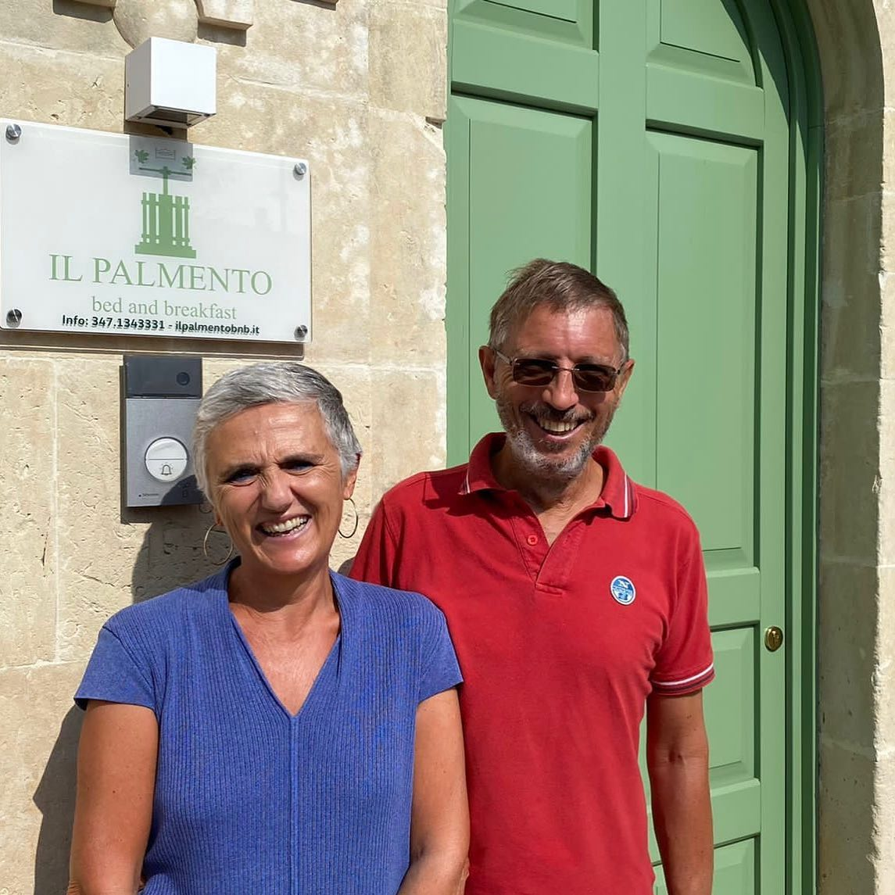

Wir feiern unsere Hochzeit am:
Sonntag, 03 Juli 2022
Startzeit: 17:00
Wir verbringen unsere Zeit inklusive Zeremonie und Gaumenschmaus am
Cala dei Balcani
Findet den Ort auf der Karte
Seid ihr schon jetzt neugierig? Wartet's ab und lasst euch überraschen! 😉
Wenn ihr wirklich nicht warten könnt... klickt: HIER
Wir erwarten eure Antwort 😌
Feiert ihr mit uns?
Lest zuerst unseren Vorschlag
und registriert eure Daten zu unterst auf der Webseite
Otranto - Santa Cesarea
(provisorischer Vorschlag)
Ankunft in Santa Cesarea und Check-in im Hotel
Gemeinsamer Tag am Strand "Alimini"
Spaziergang und Apéro in Otranto
Dusche im Hotel und Abendessen in Santa Cesarea
Ein relaxter Tag in Santa Cesarea
Seid um 17:00 Uhr am Eingang zum "Cala dei Balcani" bereit
Lasst das Fest beginnen!
Hang-Over ausschlafen auf dem Liegestuhl in Santa Cesarea
Packen und Tschüssli-Küssli
Auch wenn ihr längere Ferien plant, schlagen wir vor,
mindestens für die zwei Nächte auf Samstag und Sonntag
in Santa Cesarea zu schlafen. Es ist nicht zu empfehlen, in der Nacht,
speziell in der Provinz "Salento", Auto zu fahren!
Möchtet ihr vor oder nach der Hochzeit weitere Ferientage anhängen? Hier ein paar Vorschläge aus der Region:

Salento ist eine Region in der Region.
Es ist das Gebiet in Italien mit den meisten Gemeinden (mehr als 100!),
von denen die meisten sehr klein sind (weniger als 2000 Einwohner)
Doch jede hat ihren eigenen Dialekt und ihr eigenes Patronatsfest,
auf das sie alle sehr neidisch sind!
Barocke Kunst prägt die Denkmäler und Häuser im
historischen Zentrum von Lecce. Die Basilica di Santa Croce,
die Piazza Sant'Oronzo oder die
Villa Comunale sind ebenfalls einen Besuch wert.

Unbedingt einen Spaziergang an der Strandpromenade
oder im historischen Zentrum mit Besichtigung der
Kathedrale und der aragonesischen Burg unternehmen.
Besucht auch die umliegenden Orte und Sehenswürdigkeiten wie
Palmariggi und die Wallfahrtskirche von Montevergine,
den Leuchtturm von Punta Palascia oder den Bauxitsteinbruch.

Gallipoli mit Blick auf das Ionische Meer ist in den letzten
Jahren zu einem beliebten Ziel für Touristen geworden.
Neben schönen Stränden wie der Punta della Suina sind
auch das Anjou-Schloss und die Kathedrale von Sant'Agata
einen Besuch wert.

Ein Spaziergang durch die weiße Stadt Ostuni ist ein
weiterer Höhepunkt der Reise. Von der Piazza della Libertà,
wo der Obelisk von Sant'Oronzo steht, führen unzählige
enge Gassen und Treppen durch die Altstadt.
Jagt beim Spazierengehen nach den schönsten Aussichten!

Unbedingt besuchen sollte man Alberobello, die
Hauptstadt der Trulli, der für das Itria-Tal typischen
prähistorischen Behausungen, die seit 1996 zum UNESCO-Weltkulturerbe gehören.

Ein Tag am Meer und ein Spaziergang in Polignano ist immer lohnenswert,
mit seinen bezaubernden engen Gassen, die in hohen Klippen über dem Meer gipfeln.

Ein Tag in den Straßen von Monopoli wird euch nicht unbefriedigt lassen.
Besucht den alten Hafen oder das
Schloss von Karl V., die schönen Plätze oder die
Felsenkirchen.

Fleischliebhaber sollten an einem Abend in Locorotondo oder Cisternino
eine Metzgerei aufsuchen und die typische Bombette probieren.

Von Bari, der Hauptstadt Apuliens, bis Foggia und dem Gargano-Gebiet
könnt ihr andere schöne Kultur- und Naturstätten besuchen.

Nur 2 Autostunden von Lecce entfernt liegt ein weiteres
UNESCO-Weltkulturerbe: Matera, die Stadt der Steine.
Wir empfehlen dringend, einen Tag an diesem wunderbaren Ort zu verbringen.


Die Umgebung von Otranto bietet viele Möglichkeiten für Wanderfreunde.
Zu den Sehenswürdigkeiten gehören die Bauxit-Steinbrüche,
der Torre del Serpe, der Leuchtturm von Punta Palascia
und das Heiligtum von Montevergine.


Im Salento kann man sowohl Fisch als auch Fleisch sehr gut essen. Die Auswahl ist endlos und
wir haben keine Empfehlung für ein bestimmtes Restaurant. Wenn ihr ein wirklich typisches kulinarisches
Erlebnis sucht, könnt ihr euch HIER umsehen.
Die Cesarine-Gemeinschaft ist das älteste Netzwerk von Hausfrauen und -männern in Italien und bietet
Touristen Mittagessen, Abendessen, Kochkurse und besondere gastronomische Erlebnisse wie Verkostungen, Aperitifs
und Besuche bei lokalen Erzeugern. Entdeckt auf der Karte im Link, welche Cesarine in den verschiedenen
Dörfern des Salento zu finden sind und findet das für euch passende Angebot!
Leider ist die Website nur auf Italienisch oder Englisch verfügbar.

Der Salento sollte in 360° erlebt werden, und dazu sollte man herumreisen.
In manchen Fällen ist man jedoch gezwungen, sich an einem begrenzten Ort aufzuhalten,
so dass man nicht zu viel verallgemeinern kann: Wenn ihr zum Beispiel Kinder habt und euren
Urlaub im Salento nur für eine Woche organisieren könnt, wäre es wahrscheinlich eine
schlechte Idee, euch zu viel zu bewegen! In diesen Fällen ist es besser, eine Unterkunft
in Strandnähe zu wählen (z.B. in Otranto, Torre dell'Orso, Torren San Giovanni, Castro,
Santa Cesarea Terme).

Wenn ihr genügend Zeit habt und flexibel genug seid, um zu reisen, könnte es sich lohnen,
im Landesinneren zu bleiben, um verschiedene Dörfer und Strände zu besuchen (z.B.
Palmariggi, Galatina, Casarano, Copertino).

Der Vorteil eines Hotels am Meer liegt auf der Hand. Warum sollte man
überhaupt das Landesinnere bevorzugen?

Wir sind eindeutig voreingenommen und bevorzugen ein kleines Bed & Breakfast, das von Matteos Eltern in Palmariggi betrieben wird:  Besucht die Webseite Il Palmento und zögert nicht, Susanna und Roberto zu kontaktieren, die euch gerne helfen und euch weitere Informationen über das Bed & Breakfast und den Salento geben werden!
Wenn ihr vorausplant, könnt ihr auch schöne Ferienhäuser mieten: Es gibt viele davon, aber die besten sind sehr früh ausgebucht! Es gibt viele Websites, die private Vermietungen anbieten (AirBnB, Booking, Hometogo usw.), also geht kein Risiko ein. Aber auch an Hotels, Residenzen und Campingplätzen mangelt es nicht: Salento ist heute ein 100%iges Tourismusgebiet, und wenn ihr genau hinschaut, findet ihr bestimmt die richtige Unterkunft für euch!
Obwohl die Popularität des Salento in den letzten Jahren stark zugenommen hat,
ist das Angebot an öffentlichen Verkehrsmitteln für die Fortbewegung in der
Region leider immer noch das gleiche wie vor einigen Jahrzehnten. Ein Beispiel
ist der abgebildete moderne Maglie-Otranto-Zug.

Wenn ihr vorhabt, einige Tage im Salento zu verbringen, solltet ihr
ein Auto mitbringen oder vor Ort ein Auto mieten. Ihr könnt ein Auto
zum Beispiel direkt am Flughafen Brindisi oder über die wichtigsten Websites mieten.
Ein Kleinwagen wie ein Fiat Panda kann für etwa 30€ pro Tag gemietet werden.
Denkt daran, dass die Dörfer und Straßen in Apulien klein sind,
so dass es am besten ist, kein zu großes Auto zu haben.

Via Belvedere, 22, 73020 Santa Cesarea Terme LE, Italia
Registriert eure Daten bis Ende Februar!
Denkt daran, das schönste Geschenk ist,
mit euch allen unseren grossen Tag zu feiern!